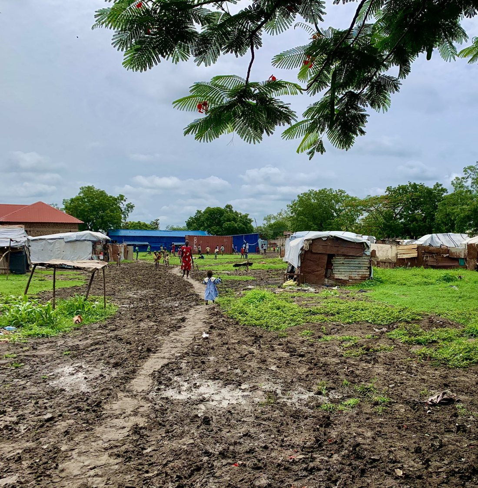
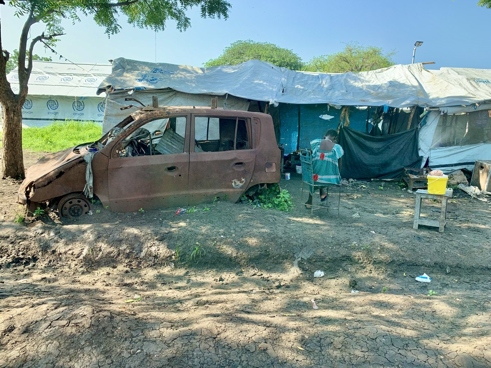

I use empirical methods—surveys and experiments in conflict-affected settings, archival and historical records, and original cross-national datasets—to study three sets of questions about how states form, change, and wage war.

Mural in Mosul, Iraq (Revkin 2019)
This line of research asks how regimes change, how governing institutions build or lose legitimacy in the eyes of the governed, and how law is used to manage, and sometimes manipulate, public memory of the past. A related strand examines how the institutions that distinguish democracies, including judicial independence, free and fair elections, and the separation between military and police, respond to pressures including polarization, war and other national emergencies, and autocratization.
Methods Original cross-national datasets · survey experiments and focus groups · archival and historical records
- Evidence-Based Transitional Justice: Incorporating Public Opinion into the Field, 133 Yale Law Journal 1582 (2024)
- Between Memory and Oblivion: The Empirical and Legal Limits of the “Duty to Remember”, Working Paper (2026)
- Transitional Justice in Authoritarian Contexts, Oxford Handbook on Law and Authoritarianism (Forthcoming 2027)
- “Operations Other Than War”: The Rise of Domestic Military Deployments, 1992–2026, Working Paper (2026)
No work in this area uses the selected method.

Graffiti in Cairo, Egypt (Revkin 2016)

Police car in Bartella, Iraq (Revkin 2018)
A long tradition in social science holds that war makes states, but that literature has focused on armies, taxation, and bureaucracies. My work examines the legal institutions—courts, codes, and police—through which wartime authorities govern, in two settings rarely studied together: a twenty-first-century insurgency in the Middle East and the nineteenth-century American capital. A second strand traces what happens after the fighting stops: how divided communities decide whether to punish or reintegrate those accused of collaboration, and how humanitarian assistance shapes reconstruction in fragile settings.
Methods Archival research · conjoint and survey experiments · household surveys in conflict-affected settings
- The Civil War Origins of Fiscal Policing: Evidence from the District of Columbia, Working Paper (2026)
- No Peace Without Punishment? Reintegrating Islamic State Collaborators in Iraq, 71 American Journal of Comparative Law 989 (2024)
- Retribution or Reconciliation? Post-Conflict Attitudes Toward Enemy Collaborators, 67 American Journal of Political Science 358 (2023)
- Resistance, Collaboration, and Ethnic Bias: Evidence on Social Cohesion in Wartime Ukraine, Revise and Resubmit (2026)
- Introducing the Fragility Index: A Tool for Evidence-Based Humanitarian Programming, Duke University & the International Organization for Migration (2024)
No work in this area uses the selected method.

Conducting a focus group in Malakal, South Sudan (Revkin 2024)

Displacement camp in Malakal (Revkin 2024)

Shelter in the Malakal camp (Revkin 2024)

Seasonal flooding in Malakal (Revkin 2024)

A child’s drawing of life under the Islamic State in Mosul, Iraq (Revkin 2017)

Al-Hol closed camp in northeast Syria (Revkin 2022)
This work concerns the conduct of war: how civilians judge the armed forces fighting around them, how international humanitarian law regulates—and fails to regulate—the use of military force, and what is owed to those harmed, whether symbolic, in the form of apologies and memorialization, or material, in the form of compensation and investment in reconstruction.
Methods Original datasets built from military strike reports · satellite imagery · conjoint experiments, interviews, and focus groups
- Civilian Harm and Military Legitimacy in War: Evidence from the Battle of Mosul, 79 International Organization 332 (2025)
- The Dangerous Rise of “Dual Use” Objects in War: History, Evidence, and the Case for Reform, 134 Yale Law Journal 2645 (2025)
- The Moral Logic of Blame for Civilian Casualties: Evidence from Iraq, Working Paper (2026)
No work in this area uses the selected method.

A child’s drawing of the battle for Mosul, Iraq (Revkin 2018)
For a complete list of papers and publications, please see my C.V. or visit my Google Scholar page.